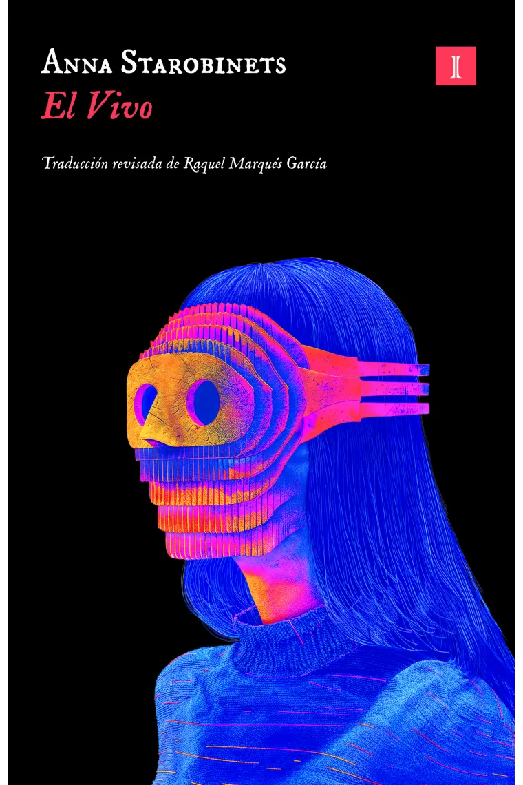
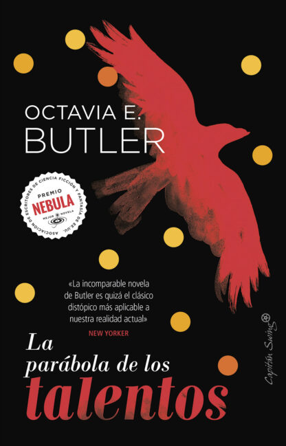
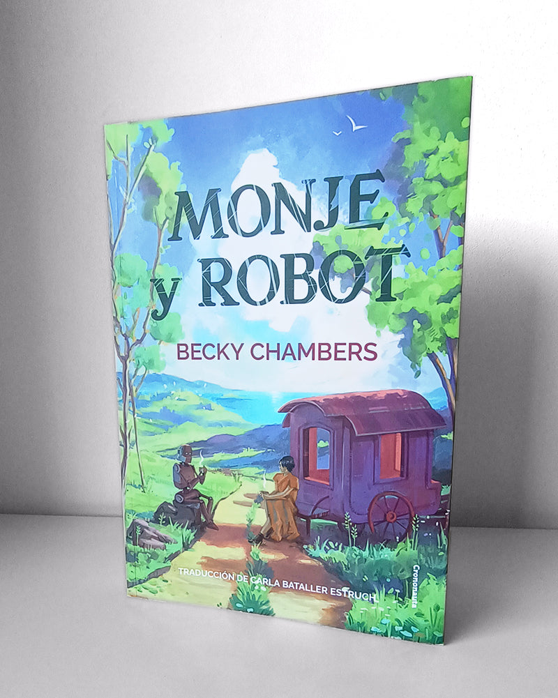
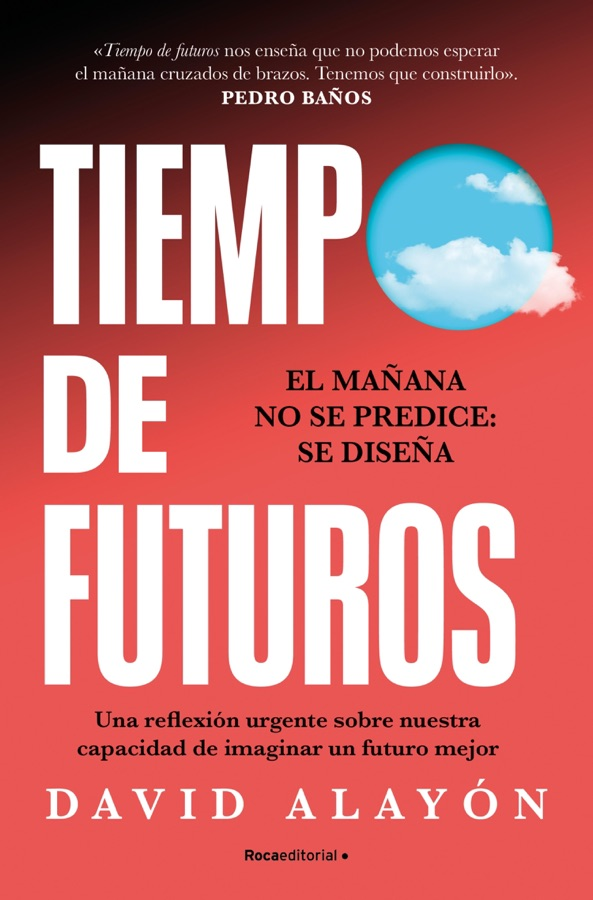

Mis libros
Fichas y mapas de subrayados de Miguel
A 55 millas por horaGuillermo FesserSubrayadosAl despertar, rompe el cascarónBecky ChambersEl último contrato de IsakoFonda Lee En las manos, el paraíso quemaPol Guasch
En las manos, el paraíso quemaPol Guasch Estación de tránsitoClifford D. Simak
Estación de tránsitoClifford D. Simak I am AIAi Jiang
I am AIAi Jiang La casa de la rosaArkady MartineSubrayadosLa constelación del PerroPeter HellerSubrayados
La casa de la rosaArkady MartineSubrayadosLa constelación del PerroPeter HellerSubrayados La glándula de ÍcaroAnna Starobinets
La glándula de ÍcaroAnna Starobinets La muerte de la autoraNnedi OkoraforSubrayados
La muerte de la autoraNnedi OkoraforSubrayados La Oficina de PremonicionesSam Knight
La Oficina de PremonicionesSam Knight La revuelta de los copistasXavier NuenoMan-kindTaiyo Fujii
La revuelta de los copistasXavier NuenoMan-kindTaiyo Fujii Mujer al borde del tiempoMarge Piercy
Mujer al borde del tiempoMarge Piercy ParentescoOctavia E. Butler
ParentescoOctavia E. Butler PersonotecnIAJavier G. Recuenco · Miguel Ángel UriondoSecuestros americanosMauro Javier Cárdenas
PersonotecnIAJavier G. Recuenco · Miguel Ángel UriondoSecuestros americanosMauro Javier Cárdenas Una desolación llamada pazArkady MartineUna memoria llamada imperioArkady MartineSubrayados
Una desolación llamada pazArkady MartineUna memoria llamada imperioArkady MartineSubrayados

El VivoAnna StarobinetsEn las manos, el paraíso quemaPol GuaschEstación de tránsitoClifford D. SimakI am AIAi JiangLa casa de la rosaArkady MartineSubrayadosLa constelación del PerroPeter HellerSubrayadosLa glándula de ÍcaroAnna StarobinetsLa muerte de la autoraNnedi OkoraforSubrayadosLa Oficina de PremonicionesSam Knight
La parábola de los talentosOctavia E. ButlerSubrayadosLa parábola del sembradorOctavia E. ButlerSubrayadosLa revuelta de los copistasXavier NuenoMan-kindTaiyo Fujii
Monje y robotBecky ChambersSubrayadosMujer al borde del tiempoMarge PiercyParentescoOctavia E. ButlerPersonotecnIAJavier G. Recuenco · Miguel Ángel UriondoSecuestros americanosMauro Javier Cárdenas
Tiempo de futurosDavid AlayónSubrayadosUna desolación llamada pazArkady MartineUna memoria llamada imperioArkady MartineSubrayados